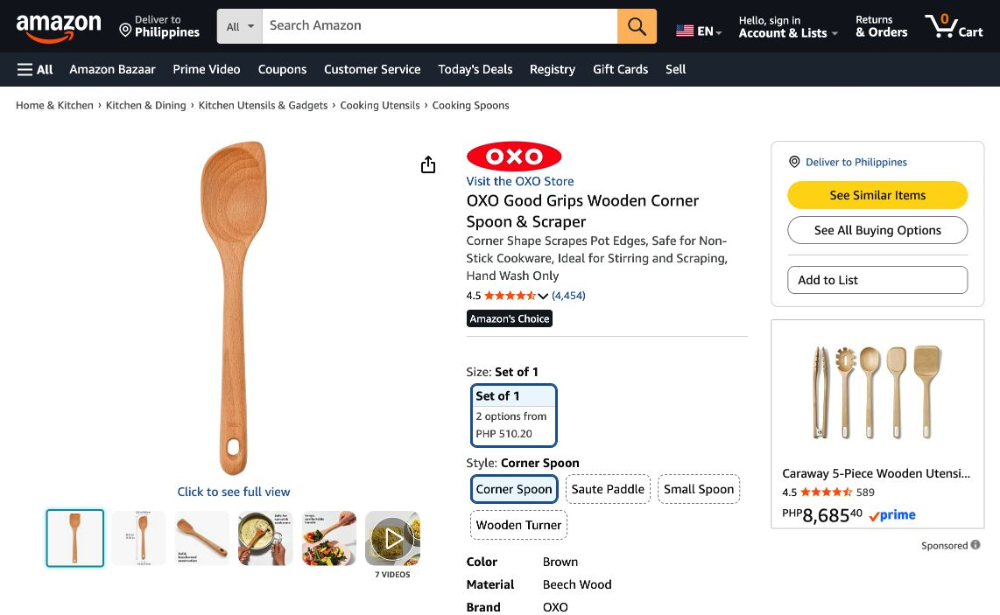
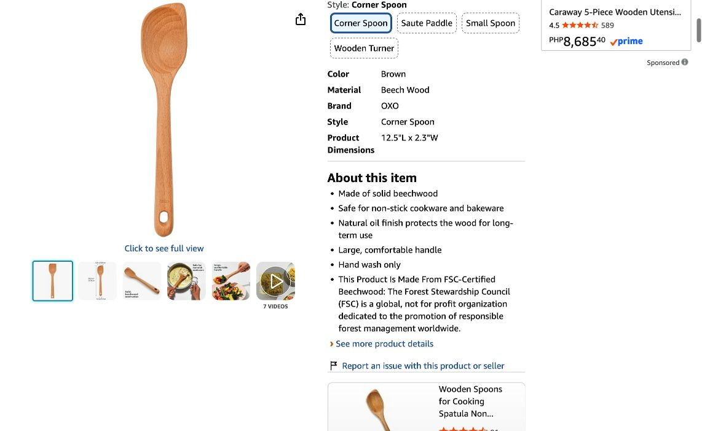

Sample 01 / Amazon VA
Amazon listing audit and rewrite
A content audit and proposed rewrite for a real kitchen product: OXO Good Grips Wooden Corner Spoon & Scraper.
01 / Audit conclusion
The listing already explains the product’s core use and care. The useful opportunity is to reorganize the message: lead with the corner shape, keep verified specifications visible and avoid adding unrelated search terms. These are editorial recommendations; an uplift in traffic or sales has not been demonstrated.
OXO Good Grips Wooden Corner Spoon & Scraper
The adjacent text already describes function, cookware compatibility and care. The audit does not treat that information as absent.
Make each field do one job
Use the title to identify the item and its verified size. Use bullets for the shape, construction, compatibility, finish and care.

02 / Findings and decisions
| Finding | Evidence | Proposed action | Validation |
|---|---|---|---|
| Title is concise; size and material appear elsewhere. | S1: title and specification area. | Test a title that adds material and length without promotional language. | Confirm selected variation and category rules before submission. |
| Benefits and care are already present. | S1: adjacent title text and item bullets. | Reorder the bullets around the shopper’s questions. | Confirm no existing factual content is contradicted. |
| Displayed width precision differs. | S1 shows 2.3 inches; S2 specifies 2.375 inches. | Do not call either source wrong. Use the agreed length in this draft. | Ask the owner to confirm dimensions against current packaging. |
| Certification language appears on the listing. | S1 includes an FSC statement. | Hold certification wording out of the proposed copy until documentation is reviewed. | Owner supplies current, product-specific support. |
| Search demand has not been measured. | No authorized search-term export or keyword-tool dataset. | Separate observed wording from editorial candidates in the workbook. | Validate candidates with marketplace-specific evidence. |
Priority is based on handoff order and factual accuracy, not a fabricated SEO score.
03 / Proposed title and bullets
Draft copy below is a proposal for review. The current listing remains unchanged.
OXO Good Grips Wooden Corner Spoon and Scraper, Beechwood, 12.5-Inch
Keep the brand and product type first. Length is a readability choice, not a verified category limit.
Reach the edges: The straight-sided head helps you work along cookware walls and into corners.
Lead with the distinctive shape; supported by manufacturer source S2.
One-piece construction: A solid beechwood body gives this wooden cooking spoon a simple, continuous design.
Material and construction from S2; cooking phrase is an editorial candidate.
Cookware compatibility: Suitable for non-stick cookware, with a broad handle for a comfortable hold.
Compatibility and handle from Amazon S1.
Protective finish: Natural oil coats the wood. Follow the product care instructions to maintain it.
Finish from S2. No quantified durability claim.
Care and size: Wash by hand. Overall length is 12.5 inches; confirm the full dimensions if storage space is tight.
Length agrees across S1/S2. Width differs in displayed precision; not repeated here.
04 / Keyword handoff
The workbook contains 18 reviewed terms and examples to exclude. Decisions are based on product fit. Literal phrase coverage is calculated from the editable copy, so a “No” does not mean a term is unindexed or that the copy is deficient.
Do not use material or care terms that contradict the product. Do not turn the exclusions into live advertising negatives without campaign context.
05 / Validation and measurement plan
- Confirm facts, product variation, category requirements and the owner’s authority to edit the listing.
- Review keyword candidates using authorized marketplace data. Record the tool, market, period and retrieval date.
- Document the approved version and publication time. Inspect the rendered title and bullets on mobile and desktop.
- If an eligible experiment is available, compare approved versions under its protocol. Otherwise, treat before/after changes as observational and document price, stock and advertising changes.
- Report impressions, clicks, sessions and orders only when the corresponding authorized reports exist. Calculate rates from consistent populations and periods.
Expected deliverable: a clearer, verified listing draft. Actual business outcome: not measured.
Sources and evidence
- S1 — Amazon product listing, ASIN B008H2JLPS. Live browser review; Amazon.com, delivery set to Philippines. The selected item was the corner spoon, one item.
- S2 — OXO manufacturer product page. Manufacturer details retrieved through web research.
- S3 — Amazon’s SEO guide. Used for workflow guidance, not a guarantee of category compliance.
